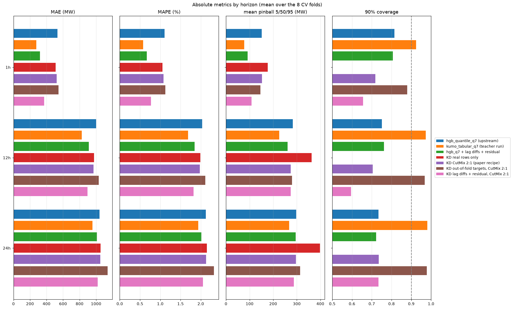
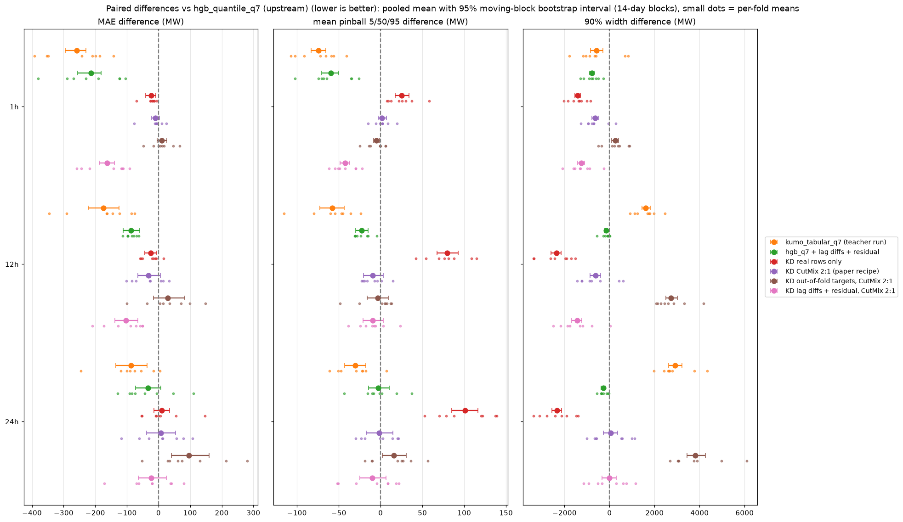
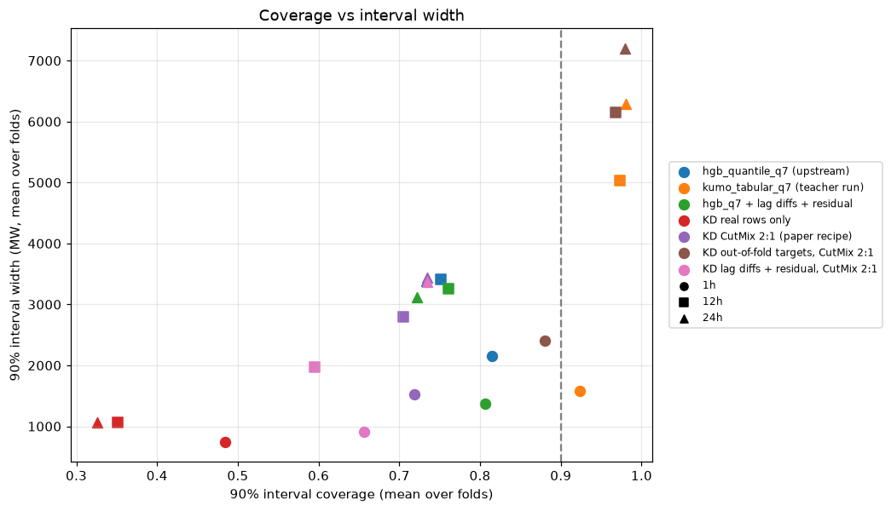
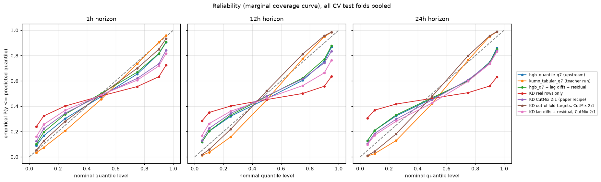
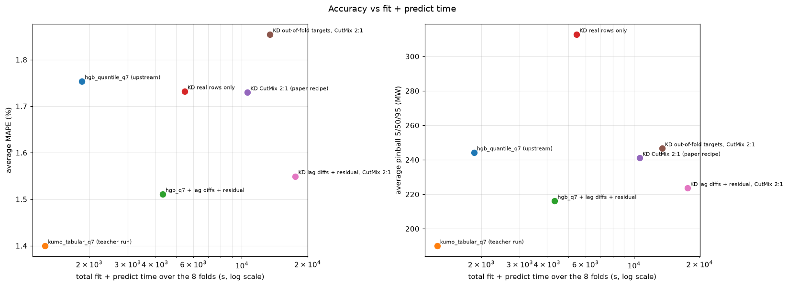
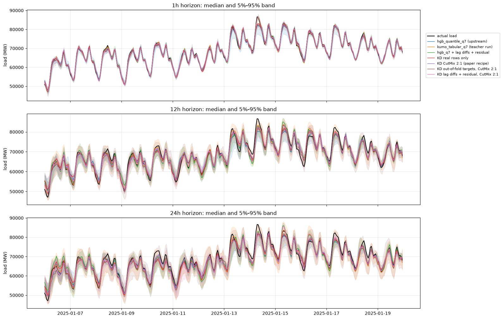
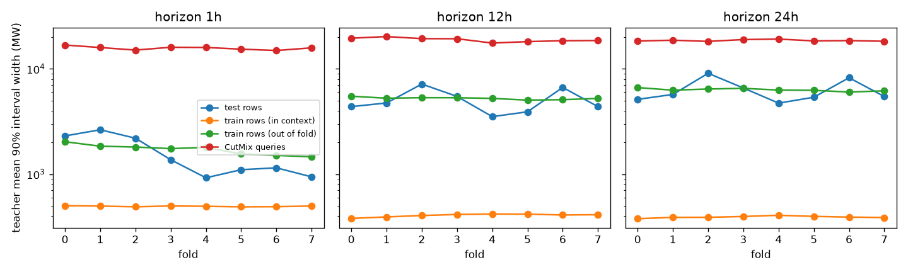

02: Distilling Kumo-Tabular into HGB quantile students
Goal: fit one HistGradientBoostingRegressor(loss="squared_error") per quantile level (0.05, 0.1, 0.25, 0.5, 0.75, 0.9, 0.95) on the quantile predictions of the Kumo-Tabular teacher of iteration 01, following arXiv:2610.01435, and see how much of the gap between hgb_quantile_q7 and kumo_tabular the students close.
Setup
- Teacher (
scripts/gen_teacher.py, L4 GPU): for each of 12 walk-forward folds (the 8 evaluation folds plus 4 earlier folds used only for calibration) and each horizon, Kumo-Tabular (8 estimators, fp16, the full training set as context) predicts the 7 quantiles on the test rows, on the training rows, and on 4 x n_train CutMix queries. The students below use the first 2 x n_train of those queries. - CutMix queries (
folds.cutmix, paper appendix A): each feature of a synthetic row is copied, with probability 0.5, from one of two training rows drawn uniformly at random. - Student (
scripts/distill.py): one HGB per level,squared_errorloss, learning rate 0.1, 31 leaves,min_samples_leaf=20, up to 3,000 iterations with early stopping (patience 100). Targets are the teacher quantiles only (no ground-truth labels). The synthetic-to-real ratio is 2:1, and the real and synthetic groups get the same total weight. The 7 predictions are sorted to remove quantile crossings. hgb_q7 (this pipeline)is the same student code trained on the labels with pinball loss and no synthetic rows. It checks that this pipeline matches the upstreamhgb_quantile_q7.hgb_q7 + lag diffs + residualis the same label-trained model with two changes that came out of the probes. It appends differences between consecutive hourly load lags andlag_h - lag_{24,48,168}, which axis-aligned trees cannot form, and it regresses the target minus the load at prediction time (lag_h).KD real rows onlydrops the synthetic rows.KD out-of-fold targetsreplaces the teacher's predictions on its own training rows with blocked out-of-fold predictions (scripts/gen_teacher_oof.py: 4 contiguous blocks, each predicted with that block and 7 days on either side removed from the context). The synthetic rows still use the full-context teacher.
The fit+predict times of the distilled students add the L4 teacher time (fit, plus predictions on the training rows and on the synthetic queries actually used) to the student fit on 4 vCPUs.
One further student, out-of-fold targets combined with the lag-difference features and the residual target, was stopped after 6 of the 12 folds. It is not reported.
Results (8 evaluation folds)
| model | MAE avg | MAE 1h | MAE 12h | MAE 24h | MAPE avg (%) | pinball 5/50/95 avg | pinball q7 avg | d2 pinball avg | cov 90 avg | width 90 avg | cov 50 avg | fit+predict (s) |
|---|---|---|---|---|---|---|---|---|---|---|---|---|
| hgb_quantile_q7 (upstream) | 859 | 534 | 1001 | 1042 | 1.75 | 244 | 278 | 0.8595 | 0.766 | 2987 | 0.305 | 1851 |
| kumo_tabular_q7 (teacher run) | 686 | 275 | 827 | 955 | 1.40 | 190 | 213 | 0.8918 | 0.959 | 4298 | 0.594 | 1255 |
| hgb_q7 (this pipeline) | 862 | 535 | 995 | 1056 | 1.76 | 243 | 277 | 0.8606 | 0.771 | 3012 | 0.309 | 3994 |
| hgb_q7 + lag diffs + residual | 747 | 320 | 913 | 1008 | 1.51 | 216 | 245 | 0.8742 | 0.763 | 2583 | 0.297 | 4336 |
| KD real rows only | 846 | 510 | 976 | 1053 | 1.73 | 313 | 341 | 0.7876 | 0.387 | 956 | 0.114 | 5466 |
| KD CutMix 2:1 (paper recipe) | 847 | 524 | 969 | 1049 | 1.73 | 241 | 273 | 0.8625 | 0.719 | 2584 | 0.286 | 10608 |
| KD out-of-fold targets, CutMix 2:1 | 905 | 544 | 1031 | 1139 | 1.85 | 247 | 275 | 0.8628 | 0.942 | 5256 | 0.543 | 13450 |
| KD lag diffs + residual, CutMix 2:1 | 763 | 371 | 897 | 1019 | 1.55 | 224 | 253 | 0.8699 | 0.662 | 2085 | 0.252 | 17580 |
Paired differences against hgb_quantile_q7 use the upstream moving-block bootstrap (14-day blocks). An interval that contains 0 is a difference the bootstrap does not separate from noise.
- The pipeline's label-trained HGB matches the upstream script: MAE 862 MW against 859 MW, same coverage and pinball loss to 1 MW. Later gaps are not an artifact of rebuilding the features outside the skrub DataOp.
- The paper recipe closes about 7% of the MAE gap (847 vs 859 and 686) and about 8% of the 7-level pinball gap (273 vs 278 and 213). Its paired MAE intervals contain 0 at every horizon (1h: -10 MW, [-21, 2]). It under-covers more than
hgb_quantile_q7(0.72 vs 0.77). - Real rows only match that median (846 MW, and the 1h and 12h MAE intervals are below 0) and destroy the intervals: 90% coverage 0.39, mean width 956 MW, 7-level pinball 341 MW. The CutMix rows are what puts the width back; they barely move the median.
- Out-of-fold targets do the opposite. Coverage rises to 0.94, close to the teacher's 0.96, and the median gets worse (905 MW; the 24h MAE interval is +97 MW, [40, 160]). The fold-0 probe below had ranked this variant first. That ranking does not survive the 8 folds.
- Lag differences and a residual target, trained on the labels, close 65% of the MAE gap (747 MW). The paired intervals are below 0 at 1h (-214 MW) and 12h (-88 MW), and contain 0 at 24h. At 1h this is 320 MW, against 534 MW for the upstream HGB and 275 MW for the teacher.
- Distilling those same features from in-context teacher targets is worse than the labels: MAE 763 vs 747, 7-level pinball 253 vs 245, coverage 0.66 vs 0.76. The 1h error is 371 vs 320 MW.






Why the paper recipe does not transfer here
scripts/teacher_diagnostics.py compares the teacher on the test rows, on its own (in-context) training rows, on the blocked out-of-fold training rows, and on the CutMix queries. Averages over the 8 evaluation folds (teacher_diagnostics.json):
| horizon | test MAE | test width 90 | test cov 90 | in-context train MAE | in-context width 90 | in-context cov 90 | out-of-fold train MAE | out-of-fold width 90 | out-of-fold cov 90 | CutMix width 90 |
|---|---|---|---|---|---|---|---|---|---|---|
| 1h | 275 | 1577 | 0.924 | 51 | 494 | 0.998 | 319 | 1717 | 0.917 | 15765 |
| 12h | 827 | 5029 | 0.973 | 35 | 405 | 1.000 | 1074 | 5254 | 0.947 | 18933 |
| 24h | 955 | 6289 | 0.981 | 35 | 391 | 1.000 | 1245 | 6330 | 0.945 | 18613 |

- The teacher memorizes its context rows. With the full training set as context it returns almost the label of each training row: median error 35-51 MW, and intervals 3 to 16 times narrower than on test rows. The neighbours of a training row, one hour apart, are in the context with their labels. At test time the closest context row is at least 7 days away. Real-row targets are therefore close to the labels for the median and much too narrow for the tails. That is the coverage of 0.39 for
KD real rows only. - CutMix queries are far off the data manifold. Mixing features of two random hours produces load lags, rolling statistics, weather forecasts and calendar columns that do not belong to one time point. The teacher answers with intervals 16-19k MW wide, 3 to 10 times the test width. Given half of the training weight, those targets widen the student, which is why the paper recipe has a better pinball loss than real rows only (273 vs 341) with the same median error.
- Out-of-fold teacher predictions do look like test predictions. Their error, width and coverage match the test rows. They are honest targets. On the full CV they produce honest coverage (0.94) and a worse median (905 MW): the student does not turn the teacher's test-time quantile function into a better point forecast than pinball loss on the labels.
Two more structured query generators were run as teachers on fold 0: CutMix over feature groups (lags, weather, calendar) and CutMix of two rows at most 72 h apart. They reduce the teacher width on synthetic rows to 5.5-8.5k MW, still 1.5 to 3.5 times the test width. They were not used for a full student.
Fold 0, horizon 1h probes
Students fitted on fold 0 at 1h only (2,184 test rows; teacher MAE 368 MW), with the default student hyperparameters. Predictions are in results/raw/probe. These probes chose the full-CV variants above. They do not, on their own, rank them: the out-of-fold variant was the best probe and the worst full-CV median.
| student | real-row targets | synthetic ratio | residual target | MAE | pinball q7 | cov 90 | width 90 |
|---|---|---|---|---|---|---|---|
| labels, pinball loss | labels | 0 | no | 567 | 198 | 0.68 | 1533 |
| labels, pinball loss | labels | 0 | yes | 605 | 218 | 0.60 | 1230 |
| KD | in-context teacher | 0 | no | 563 | 226 | 0.41 | 633 |
| KD | in-context teacher | 1 | no | 569 | 183 | 0.79 | 1882 |
| KD | in-context teacher | 2 | no | 571 | 188 | 0.76 | 1772 |
| KD | in-context teacher | 4 | no | 562 | 184 | 0.76 | 1808 |
| KD | in-context teacher | 0 | yes | 600 | 253 | 0.39 | 526 |
| KD | in-context teacher | 2 | yes | 547 | 181 | 0.75 | 1654 |
| KD | out-of-fold teacher | 0 | no | 585 | 195 | 0.71 | 1593 |
| KD | out-of-fold teacher | 2 | no | 576 | 176 | 0.86 | 2329 |
On this one fold, CutMix mostly changes the width, and the synthetic ratio from 1 to 4 barely changes the median. The full CV then shows that the median gains come from the lag-difference features trained on labels, not from teacher supervision.